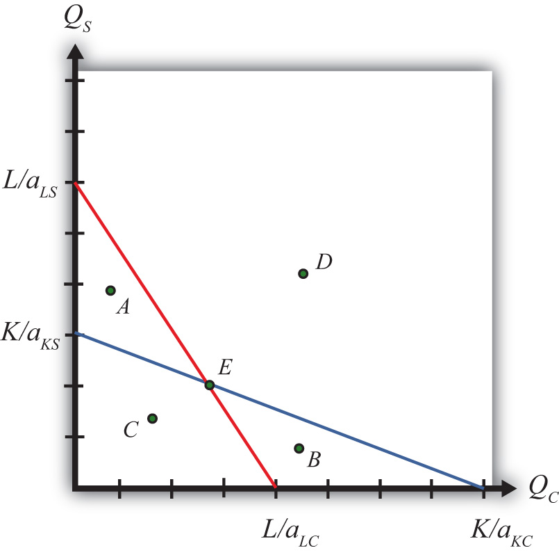

The production possibility frontier (PPF) can be derived in the case of fixed proportions by using the exogenous factor requirements to rewrite the labor and capital constraints. The labor constraint with full employment can be written as
aLCQC + aLSQS = L.The capital constraint with full employment becomes
aKCQC + aKSQS = K.Each of these constraints contains two endogenous variables: QC and QS. The remaining variables are exogenous.
We graph the two constraints in Figure 5.1 "The Labor and Capital Constraints". The red line is the labor constraint. The endpoints and represent the maximum quantities of clothing and steel that could be produced if all the labor endowments were allocated to clothing and steel production, respectively. All points on the line represent combinations of clothing and steel outputs that could employ all the labor available in the economy. Points outside the constraint, such as B and D, are not feasible production points since there are insufficient labor resources. All points on or within the line, such as A, C, and E, are feasible. The slope of the labor constraint is .
Figure 5.1 The Labor and Capital Constraints
The blue line is the capital constraint. The endpoints and represent the maximum quantities of clothing and steel that could be produced if all the capital endowments were allocated to clothing and steel production, respectively. Points on the line represent combinations of clothing and steel production that would employ all the capital in the economy. Points outside the constraint, such as A and D, are not feasible production points since there are insufficient capital resources. Points on or within the line, such as B, C, and E, are feasible. The slope of the capital constraint is .
The PPF is the set of output combinations that generates full employment of resources—in this case, both labor and capital. Only one point, point E, can simultaneously generate full employment of both labor and capital. Thus point E is the PPF. The production possibility set is the set of all feasible output combinations. The PPS is the area bounded by the axes and the interior section of the labor and capital constraints. Thus at points like A, there is sufficient labor to make production feasible but insufficient capital; thus point A is not a feasible production point. Similarly, at point B there is sufficient capital but not enough labor. Points like C, however, which lie inside (or on) both factor constraints, do represent feasible production points.
Note that the labor constraint is drawn with a steeper slope than the capital constraint. This implies , which in turn implies (with cross multiplication) . This means that steel is assumed to be capital intensive and clothing production is assumed to be labor intensive. If the slope of the capital constraint had been steeper, then the factor intensities would have been reversed.
Jeopardy Questions. As in the popular television game show, you are given an answer to a question and you must respond with the question. For example, if the answer is “a tax on imports,” then the correct question is “What is a tariff?”